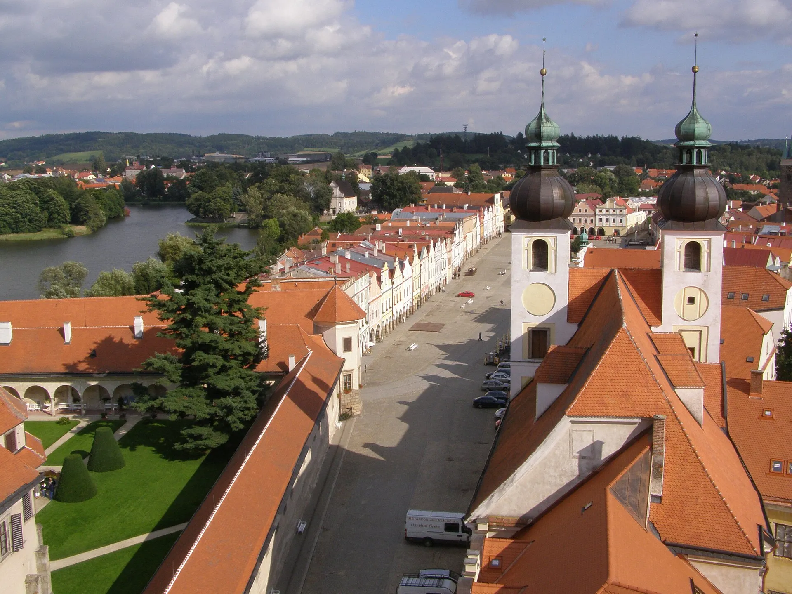

About Telč
A fairytale town inscribed on the UNESCO list.
The first written mention of the town of Telč dates back to 1315. An important date is the year 1339, when Telč came into the possession of Oldřich z Hradce from the Vítkovci family.
The historic center of the town belongs to the most valuable urban monument reservations in Moravia and in 1992 was inscribed on the UNESCO World Heritage List. The historical part of the suburb, Staré Město (around the Church of the Virgin Mary), is a protected urban monument zone, and last but not least, the new buildings of the 20th century on the outskirts of the town respected the valuable urban panorama, which is not disturbed by high-rise panel buildings.
The dominant and also the most significant architectural monument of the town is the Renaissance Telč Castle. Telč Castle is one of the jewels of Moravian Renaissance architecture. Its attractiveness is all the greater because the original interiors have been preserved in very good condition thanks to the sensitive approach of the owners to the heritage of the past.
In the 13th century, a network of towns began to develop in the Czech lands, either emerging from some older centers or being founded systematically on previously undeveloped land. This was also when the so-called Old Town emerged, which gradually merged with the original manorial court and church.
In 1339, Telč was acquired by Oldřich of Hradec, whose name is associated with the founding of Nová Telč, but the founding charter has unfortunately not survived. Oldřich of Hradec belonged to the prominent noble family of Vítkovci, who were settled in South Bohemia. Gradually, the lords of Hradec sought to expand the Telč estate
The founders granted the towns rights without which they could not fulfill their functions. It was the right of jurisdiction and criminal law, but no less important for the medieval town was the right to hold markets. The center of Telč- originally a market settlement-therefore became a market square with narrow houses often reaching up to the then city walls. Weekly markets were only important for the immediate vicinity, but for the annual markets merchants from greater distances, sometimes even from abroad, came. The market law was also related to other
An important period for the origin of today's Telč was the fire in 1530, which destroyed one entire side of the square together with the town hall and the subsequent period of the rule of Zachariáš of Hradec. This nobleman, who was not only an excellent politician and economist, rebuilt the Gothic medieval castle into a Renaissance chateau fully characterizing his time. The town also benefited from various advantages during his reign. Starting with the reconstruction of burgher houses with the help of Italian craftsmen, through the construction of the town
In 1604, the estate passed into the ownership of the Slavat of Chlumec. The most significant contribution to the local history was made by the wife of Joachim Oldřich Slavata, who invited the Jesuits to the town and had a college and the Church of the Name of Jesus built for them opposite the castle. The Jesuits remained here until 1773, when the order was abolished by Pope Clement XIV.
In 1681, the Liechtenstein-Kastelkorn family appeared in Telč. Their relative Alois Count Podstatský spojil erby obou rodů roku 1762 a vznikají Podstatští –Lichtenštejnové. Ti pak zůstávají v Telči až do roku 1945, kdy dochází k jejich vysídlení do Rakouska.
The town then began to develop more significantly again in the 19th century. At that time, associations such as Sokol, Omladina or Občanská beseda were founded here. The change in production and trade also occurred in connection with the construction of the railway, which connected Telč with Kostelec and led further to Slavonice.
Further construction growth can be observed in Telč only after the mid-20th century, but at that time it was mainly related to the development of local industrial enterprises. Since 1970, the town has been declared a monument reservation and subsequently in 1992 it was included in the list of UNESCO World Cultural Heritage.
